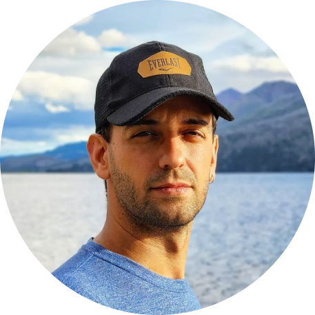

C:\Users\Web\index.html
1 2 3 4 5 6 7 8 9 10 11 12 13 14 15 16 17
¡Hola! quiero contarte que soy una persona muy inquieta, que siempre está buscando algo nuevo que aprender. Desde hace más de 20 años que indago y surfeo el mundo IT, realizando mis propios proyectos personales y con la mira siempre puesta en ser autosuficiente. Desde hace un tiempo decidí profesionalizar todo ese conocimiento y embarcarme en este viaje de convertir eso que era un hobby en mi vida y sustento diario. En este portafolio podrán encontrar todos mis proyectos e inquietudes. Siéntanse libres de contactarme cuando lo deseen.
18 19 20 21 22 23 24 25 26 27 28 29 30 31 32 33
Hi! I want to tell you that I'm a very restless person, always looking for something new to learn. For more than 20 years, I've been exploring and navigating the IT world, working on my own personal projects and always aiming to be self-sufficient. Recently, I decided to turn all that knowledge into a profession and embark on this journey to make what was once a hobby my daily life and livelihood. In this portfolio, you'll find all my projects and interests. Feel free to contact me whenever you want.